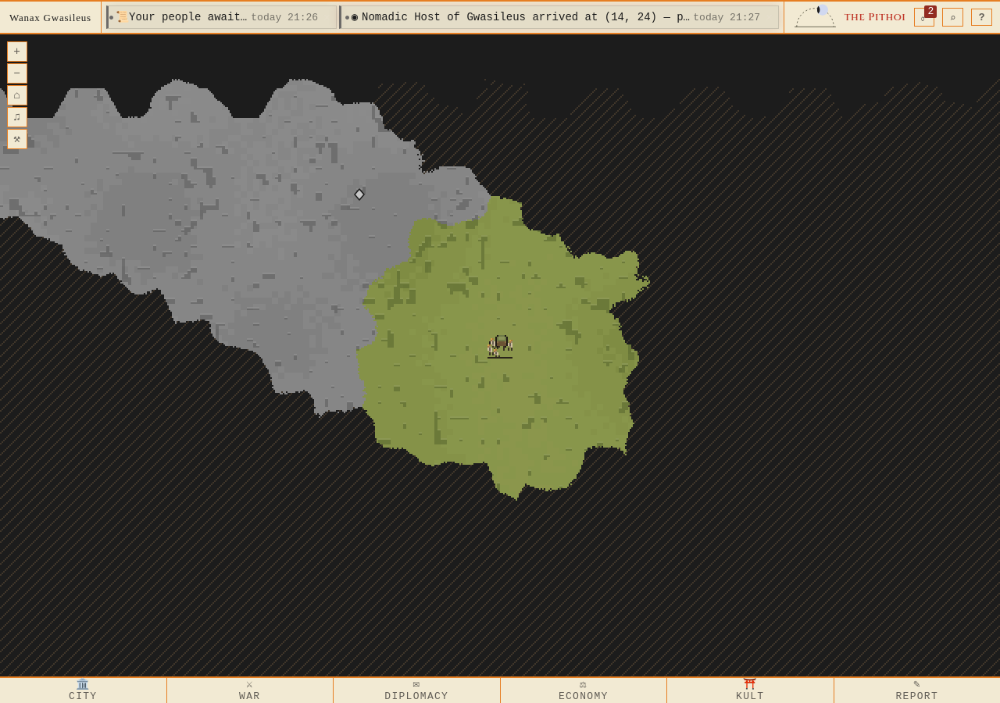
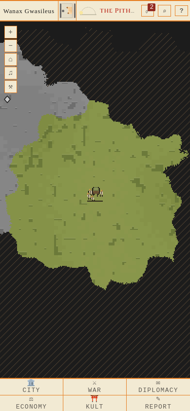

Keryx → riktig order → worker → ankomst, utan kartläsningar längs resan. Grått = bestående synminne; grönt = nuvarande sikt; streckat = okänt. Explicit isolerad slättfixtur.
Kontrakt, resultat och avgränsningar · API/DB/provenance · Privat driftkopia

